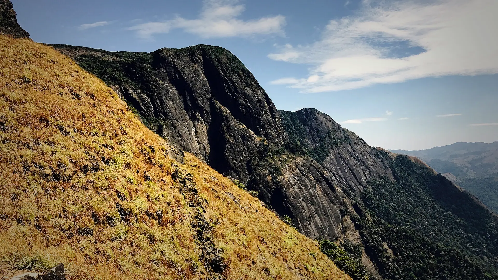

02Day 2 · Kukke Subramanya · 165 mkm 0.1
From the temple town
280kmFrom Bangalore · Overnight
After the night drive from Bangalore, the walk starts at the Kukke Subramanya temple, about 165 m above sea level.

Photo: Prashanth bhat, CC BY-SA 4.0ಕುಮಾರ ಪರ್ವತ · Dakshina Kannada, Western Ghats
The trek in one line, and what you can do with it.
One of the toughest treks in Karnataka: a big climb from near sea level, with one night at a forest house.
6 stops on the map, then the climb. Scroll the stops and the map follows.
02Day 2 · Kukke Subramanya · 165 mkm 0.1
280kmFrom Bangalore · Overnight
After the night drive from Bangalore, the walk starts at the Kukke Subramanya temple, about 165 m above sea level.
02Day 2 · Bhattara Manekm 3.9
₹250Forest fee · A person, at the office
Bhattara Mane, a house on the hillside, serves food and has toilets: there is nothing beyond it. The forest office nearby checks permits.
03Day 3 · Kallu Mantapakm 6.0
5–6amLeave camp · In the dark
About an hour from camp, Kallu Mantapa, a stone pavilion by a stream, is the last water before the peak. Fill up.
03Day 3 · Shesha Parvathakm 7.4
SteepClimb · Over boulders
A steep climb over boulders to Shesha Parvatha. From here the trail drops 200–300 m before climbing again to the summit.
03Day 3 · Kumara Parvatha · 1,712 mkm 8.4
+1,550mFrom Kukke · Of climbing
Past a vertical rock face to the top of Kumara Parvatha, 1,712 m, in the Pushpagiri Wildlife Sanctuary.
03Day 3 · Kukke Subramanyakm 16.6
3–4hTo the forest office · From the top
The long way down: 3–4 hours to the forest office, and about 2.5 more to Kukke, then the overnight bus to Bangalore.
Best in Oct–Feb.
Dark: the months the trek’s sources call its best. Mid: possible. See all treks in October.
Base prices from 4 operators’ own pages, per person. GST and travel are often extra. Treqz sells nothing.
₹3,650–3,999
The practical things, then the questions people ask.
KSRTC buses to Kukke Subrahmanya leave from Platform 2A at Majestic in Bangalore. Book ahead on ksrtc.in or redBus. The trail gate is a 1.5 km walk from the bus stand.
Trekup IndiaSubrahmanya Road station is about 11 km from the temple. A shared jeep costs about ₹60 a seat. An auto costs about ₹300.
Trekup IndiaBhatta's house at Bhattara Mane is the only food stop. It gets crowded, so carry dry fruit, nuts and snacks.
Trekup IndiaAbout 16.7 km of walking over 3 days on the trail.
The highest point is 1,712 m, about 1,570 m above the start.
Its sources grade it Moderate–hard.
Oct–Feb.
₹3,650 to ₹3,999 per person: base prices from 4 operators' own pages. GST and travel are often extra.
Expect patchy or no signal on the trek.